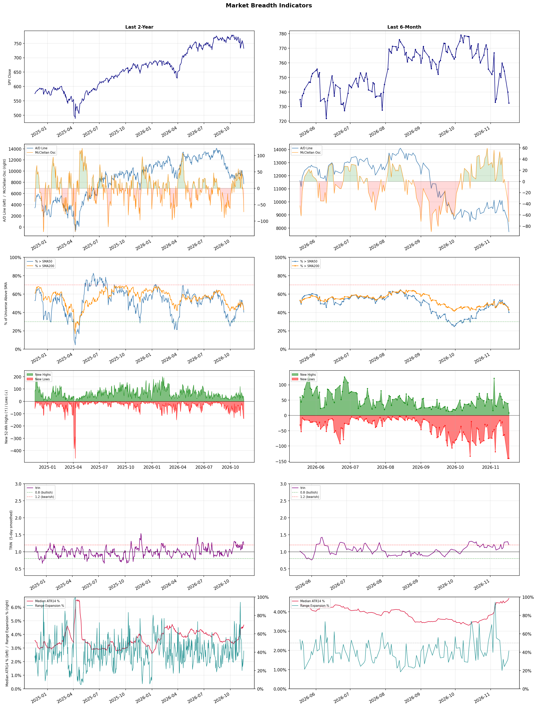

A daily market breadth and sector rotation report for active investors
| Item | Read |
|---|---|
| Regime | Defensive |
| Risk posture | Defensive |
| Universe | 1,310 stocks tracked · 8 new 52-week highs · 30 active swing setups |
| Breadth | only 40.2% of tracked stocks are above SMA50, new lows exceed new highs (140 vs 8), McClellan oscillator (breadth momentum) is negative at -72.1 |
| Leadership | Advertising Agencies, Discount Stores, and Apparel Manufacturing |
| Weakest groups | Other Industrial Metals & Mining, Uranium, and Electrical Equipment & Parts |
Use this report to prioritize research and chart review; validate entries, stops, liquidity, earnings, and risk before acting.
| Item | Read |
|---|---|
| Primary read | Defensive regime with Defensive risk posture. |
| Research queue | APP, STGW, MGNI, EVC, TTD |
| Leadership focus | Advertising Agencies, Discount Stores, and Apparel Manufacturing |
| Caution list | Other Industrial Metals & Mining, Uranium, and Electrical Equipment & Parts |
| Review prompt | Check extension risk, chart location, fundamentals, valuation, and earnings before using any research row. |
| Item | Read |
|---|---|
| Primary read | 4 active risk warnings; use screen output as watchlist input only. |
| Bullish screens | BILL, DXC |
| Bearish screens | COIN, NFLX, GMED, QDEL, LZ |
| Alerts / levels | Automated trigger, stop, ATR, liquidity, reward/risk, and event-risk levels are pending future enrichment. |
| Review prompt | Open the linked chart, define trigger and invalidation, then check liquidity and event risk independently. |
Risk Posture: Defensive — screen backdrop favors caution; require independent risk review before new exposure
Metric context: McClellan below -50 = elevated selling pressure; below -100 = washout territory. Range Expansion = share of stocks with daily range above their 20-day average. Signal Density = share of tracked names appearing in signal screens.
| Breadth Date | % > SMA50 | % > SMA200 | New Highs | New Lows | McClellan | Median Range | Avg Range | Median ATR14 | Range Expansion | Signal Density |
|---|---|---|---|---|---|---|---|---|---|---|
| 2026-11-17 | 40.2% | 43.0% | 8 | 140 | -72.1 | 3.7% | 4.5% | 4.7% | 41.4% | 4.5% |

Prior comparison date: November 16, 2026
| Metric | Prior | Current | Change |
|---|---|---|---|
| Regime | Defensive | Defensive | unchanged |
| Risk Posture | Defensive | Defensive | unchanged |
| % > SMA50 | 45.9% | 40.2% | -5.7 pts |
| % > SMA200 | 45.5% | 43.0% | -2.5 pts |
| New Highs | 39 | 8 | -31 |
| New Lows | 140 | 140 | +0 |
Top-10 industries entering: Beverages - Non-Alcoholic. Top-10 industries leaving: Health Information Services. New multi-signal long setups: BILL, DXC. New multi-signal short setups: ALLO, AMSC, BABA, BLSH, BRUN, CRSP, CTMX, JMIA.
| Status | Tickers | Read |
|---|---|---|
| Added | ALLO, AMSC, BABA, BILL, BLSH, BRUN, CRSP, CTMX | New technical screen matches vs prior report. |
| Removed | ALB, CB, CHD, CL, COST, DUK, ED, HUM | No longer present in today's technical screen matches. |
| Still Active | BTDR, COIN, FLNC, GMED, GNL, HTZ, INOD, JBI | Appeared in both current and prior reports. |
| Promoted | none | Model Screen Score improved by at least 15 points. |
| Downgraded | none | Model Screen Score declined by at least 15 points. |
| Direction | Industry | ETF | Prior Rank | Current Rank | Days | Rank Change |
|---|---|---|---|---|---|---|
| Rose | Airlines | N/A | 78 | 13 | 28 | +65 |
| Rose | Resorts & Casinos | N/A | 85 | 30 | 42 | +55 |
| Rose | Advertising Agencies | N/A | 56 | 1 | 42 | +55 |
| Rose | Integrated Freight & Logistics | N/A | 73 | 21 | 42 | +52 |
| Rose | REIT - Retail | N/A | 71 | 22 | 42 | +49 |
Bull: The Airlines sector is experiencing a rising relative strength primarily due to a rebound in travel demand, as highlighted by recent articles discussing the best airline stocks to buy in 2026 and the overall optimism surrounding airline investments. Despite some short-term disruptions from geopolitical tensions, such as the US-Iran conflict, the market's reaction to United Airlines' disappointing earnings—where the stock still advanced—indicates strong investor confidence in the sector's long-term recovery and growth potential. Additionally, the focus on airline stocks in both the US and UK markets suggests a broader resurgence in travel and tourism, further bolstering the industry's outlook.
Bear: While the airline sector may currently exhibit rising relative strength, this trend is misleading in light of underlying vulnerabilities. The recent geopolitical tensions, such as the US-Iran conflict, have already led to travel disruptions, which could signal a more volatile environment for airlines than anticipated. Furthermore, United Airlines' stock performance despite disappointing earnings raises concerns about inflated valuations and investor sentiment that may not be supported by fundamental recovery, suggesting that the sector could face significant headwinds in the near future as economic uncertainties persist.
Verdict: The airline industry's rising relative strength is primarily driven by a robust rebound in travel demand, fueled by pent-up consumer desire for travel and optimism surrounding airline investments. However, key risks remain, particularly from geopolitical tensions and economic uncertainties that could disrupt travel patterns and challenge the sustainability of this growth. Investors should remain cautious and closely monitor geopolitical developments and economic indicators that could impact airline performance in the near term.
Sources: Google News
Bull: The Resorts & Casinos sector is experiencing a rising relative strength primarily due to positive sentiment surrounding future growth prospects, as highlighted in recent articles discussing the best casino stocks to buy in 2026. This optimism is bolstered by strong Q3 earnings reports from major players like MGM Resorts, indicating resilience in consumer discretionary spending despite broader economic concerns. Additionally, the focus on strategic deal-making within the sector suggests that companies are positioning themselves for long-term growth, further enhancing investor confidence.
Bear: While the relative strength trend may appear positive, it is essential to recognize that the optimism surrounding future growth prospects is largely speculative and may not be grounded in sustainable fundamentals. The recent focus on deal-making could indicate desperation among companies to consolidate and cut costs in a slowing growth environment, rather than genuine confidence in their individual growth trajectories. Moreover, the consumer discretionary sector is vulnerable to economic downturns, and any signs of reduced consumer spending could significantly impact the profitability of resorts and casinos, undermining the bullish sentiment.
Verdict: The Resorts & Casinos sector is likely experiencing a rise in relative strength due to strong Q3 earnings from major players like MGM Resorts, which reflect resilience in consumer discretionary spending and strategic positioning for future growth. However, investors should remain cautious of the bear case's key risk: the potential for an economic downturn that could lead to reduced consumer spending, jeopardizing the profitability of these companies and undermining the current bullish sentiment.
Sources: Google News
Bull: The Advertising Agencies sector is experiencing a bullish trend primarily due to its strategic adaptation to AI technologies, as highlighted by headlines indicating that ad agency stocks are poised to leverage AI disruption to their advantage. This shift not only enhances operational efficiencies but also improves targeting and personalization in advertising, making campaigns more effective and driving revenue growth. Additionally, the positive outlook from analysts, as seen in articles discussing the best advertising technology stocks and companies to watch, reflects growing investor confidence in the industry's ability to innovate and thrive in a competitive landscape.
Bear: While the advertising agencies sector may appear to be adapting to AI technologies, this enthusiasm overlooks significant challenges such as increasing competition from tech giants and the potential for AI to disrupt traditional advertising models rather than enhance them. Furthermore, the reliance on AI may lead to over-automation, diminishing the creative aspects that differentiate successful campaigns, and ultimately eroding client trust and brand loyalty. As a result, the industry's current bullish sentiment may be overinflated, masking underlying vulnerabilities that could hinder long-term growth.
Verdict: The advertising agencies sector is experiencing a bullish trend primarily due to its strategic integration of AI technologies, which enhances operational efficiencies and improves targeting and personalization in campaigns, driving revenue growth. However, a key risk lies in the potential over-reliance on AI, which could undermine the creative elements that differentiate successful campaigns and lead to diminished client trust and brand loyalty, ultimately threatening long-term growth. Investors should closely monitor how agencies balance AI adoption with maintaining creative integrity to navigate these challenges effectively.
Sources: Google News
Bull: The Integrated Freight & Logistics sector is experiencing rising relative strength primarily due to increasing investments in logistics infrastructure and innovative solutions aimed at enhancing efficiency, as highlighted by Petrobras' move to strengthen ethanol logistics with the Logum deal. Additionally, the launch of an integrated air cargo data and payment solution by Visa and the Airport Authority of Hong Kong indicates a trend towards digital transformation and improved operational capabilities within the industry, positioning it favorably for growth in the coming years. These developments suggest a robust demand for logistics services, driven by evolving supply chain needs and technological advancements.
Bear: While the Integrated Freight & Logistics sector may currently exhibit rising relative strength, this could be misleading due to short-term trends rather than sustainable growth. The increasing investments in logistics infrastructure and technology, such as the Logum deal and the Visa payment solution, may not address underlying issues such as rising fuel costs, labor shortages, and potential regulatory challenges that could significantly impact profitability and operational efficiency in the long term. Moreover, the industry's reliance on cyclical economic conditions raises concerns about its resilience in the face of potential economic downturns, which could dampen demand for logistics services.
Verdict: The Integrated Freight & Logistics sector is likely experiencing growth due to increased investments in logistics infrastructure and digital transformation initiatives, which enhance operational efficiency and meet evolving supply chain demands. However, key risks include rising fuel costs, labor shortages, and regulatory challenges that could undermine long-term profitability and resilience, particularly in the face of potential economic downturns. Investors should closely monitor these risks while considering opportunities in innovative logistics solutions.
Sources: Google News
Bull: The REIT - Retail sector is experiencing a rise in relative strength primarily due to the demonstrated resilience of its diverse portfolios, as highlighted by FrontView REIT's Q3 growth and earnings performance. This suggests that retail properties are maintaining their value and generating stable income despite broader economic challenges, a sentiment echoed by articles from Morningstar and Yahoo Finance that identify specific retail REITs as attractive investment opportunities even amid higher interest rates and industry headwinds. Additionally, the ongoing interest in real estate investment strategies, as noted by The Motley Fool, indicates a growing confidence in the long-term viability of retail REITs.
Bear: While the recent performance of retail REITs may suggest resilience, it is crucial to consider the underlying economic pressures that could undermine this stability. Rising interest rates and inflationary pressures are likely to squeeze consumer spending, potentially leading to higher vacancy rates and lower rental income for retail properties in the long run. Furthermore, the shift towards e-commerce and changing consumer preferences could render many traditional retail spaces less desirable, posing a significant risk to the sector's future growth and profitability.
Verdict: The retail REIT sector's rising strength is fundamentally driven by the resilience of diverse property portfolios, as evidenced by strong earnings reports like FrontView REIT's Q3 performance, which indicate stable income generation despite economic challenges. However, investors should remain cautious of the potential risks posed by rising interest rates, inflation, and the ongoing shift towards e-commerce, which could negatively impact consumer spending and lead to increased vacancy rates in traditional retail spaces.
Sources: Google News
| Direction | Industry | ETF | Prior Rank | Current Rank | Days | Rank Change |
|---|---|---|---|---|---|---|
| Fell | Copper | COPX | 3 | 84 | 35 | -81 |
| Fell | Semiconductor Equipment & Materials | SOXX | 5 | 82 | 42 | -77 |
| Fell | Computer Hardware | XLK | 11 | 83 | 42 | -72 |
| Fell | Semiconductors | SOXX | 6 | 75 | 42 | -69 |
| Fell | Electronic Components | XLK | 4 | 72 | 42 | -68 |
Bear: While the bull analyst attributes the recent decline in copper's relative strength primarily to tariff uncertainties, it is crucial to recognize that the broader economic landscape is also influencing demand for copper. Factors such as slowing global economic growth, particularly in China—the largest consumer of copper—alongside rising interest rates and inflationary pressures, could dampen industrial activity and investment in infrastructure, leading to a more sustained downturn in copper prices. Furthermore, the optimism surrounding AI and other sectors may not translate into immediate demand for copper, as these technologies often rely on alternative materials or have longer-term adoption timelines.
Bull: Copper's recent decline in relative strength can be attributed to heightened uncertainty surrounding tariffs, as indicated by the Yahoo Finance headline about tariff doubts reversing a record rally and causing significant drops in major copper stocks like Freeport-McMoRan and Teck Resources. Additionally, while the Motley Fool highlights the potential for copper stocks in the long term, the immediate market sentiment appears to be overshadowed by concerns over geopolitical tensions and their impact on global trade, which are likely contributing to the current volatility in the copper sector.
Verdict: The recent decline in copper prices is primarily driven by heightened uncertainty surrounding tariffs and geopolitical tensions, which have overshadowed long-term growth potential in the sector. However, the key risk lies in the broader economic landscape, particularly slowing demand from China and rising interest rates, which could lead to a more sustained downturn in copper prices if industrial activity and infrastructure investment continue to wane. Investors should closely monitor global economic indicators and trade policies to gauge potential recovery or further declines in the copper market.
Sources: Google News
Bear: While the bull analyst attributes the decline in the Semiconductor Equipment & Materials sector to heightened volatility and temporary market sentiment, a deeper concern lies in the fundamental oversupply issues and diminishing margins within the semiconductor industry. The recent selloff in AI chip stocks, including Applied Materials, suggests that the market is not just reacting to short-term earnings reports but is also grappling with long-term demand uncertainties, particularly as companies reassess their capital expenditures in light of rising interest rates and geopolitical tensions that could further disrupt supply chains. This environment raises significant doubts about the sector's ability to sustain growth, making a bearish outlook more plausible.
Bull: The Semiconductor Equipment & Materials sector is experiencing a decline in relative strength primarily due to heightened volatility and negative sentiment surrounding AI chip stocks, as evidenced by the significant selloff in companies like Arm and Marvell ahead of NVIDIA's earnings report. Additionally, the recent drop in Applied Materials' stock price, following broader market trends, reflects investor concerns about demand fluctuations and profitability in the semiconductor space, which are compounded by macroeconomic uncertainties. This combination of factors has led to a bearish sentiment overshadowing the sector, despite its long-term growth potential.
Verdict: The Semiconductor Equipment & Materials sector's decline is primarily driven by fundamental oversupply issues and shrinking margins, compounded by macroeconomic factors such as rising interest rates and geopolitical tensions that threaten supply chains. Investors should be cautious, as the bear case highlights significant risks related to long-term demand uncertainties and potential capital expenditure cuts, suggesting that the sector may struggle to maintain growth momentum in the near term. To navigate this volatility, stakeholders should closely monitor market trends and adjust their investment strategies accordingly.
Sources: Google News
Bear: While the bull analyst attributes the sector's decline to a temporary sell-off and a shift in focus towards emerging technologies, it is crucial to recognize that this trend may signal a fundamental weakness in the Computer Hardware sector itself. The significant drop in stocks like Sandisk, combined with a CIO's call to abandon AI hardware stocks in favor of more promising sectors, indicates a growing skepticism about the long-term viability and profitability of traditional hardware investments, suggesting that investors may be losing confidence in the sector's ability to innovate and deliver sustainable growth.
Bull: The recent decline in the relative strength of the Computer Hardware sector can primarily be attributed to a sector-wide sell-off, as highlighted by Sandisk's 6.7% drop, which reflects broader market concerns impacting investor sentiment. Additionally, the shift in focus towards emerging technologies like quantum computing, as noted in multiple headlines discussing the best stocks in that space, suggests that investors are reallocating capital away from traditional hardware stocks in favor of sectors perceived to have higher growth potential, such as quantum computing and other innovative technologies.
Verdict: The recent decline in the Computer Hardware sector is primarily driven by a sector-wide sell-off and a strategic pivot by investors towards emerging technologies like quantum computing, which are perceived to offer greater growth potential. However, a key risk highlighted by the bear thesis is the potential fundamental weakness within the sector, as evidenced by significant stock drops and growing skepticism regarding the long-term viability of traditional hardware investments, suggesting that investors may need to reassess their exposure to this sector. Investors should closely monitor innovation trends and consider reallocating capital to sectors with stronger growth prospects to mitigate risks.
Sources: Google News
Bear: While the bull analyst attributes the decline in semiconductor stocks to a typical rotation in investor sentiment, it's crucial to recognize that this trend may signal deeper structural issues within the industry. The headlines indicate a significant loss of momentum, suggesting that investors are not merely reallocating capital but are increasingly concerned about the sustainability of growth in a sector facing potential saturation and heightened competition. Furthermore, with the S&P 500 outperforming semiconductor stocks, it raises questions about the long-term viability of these high-growth narratives, especially as economic uncertainties loom and demand for chips may not keep pace with inflated valuations.
Bull: The recent decline in the relative strength of semiconductor stocks can be attributed to a rotation of investor sentiment away from high-growth sectors like AI and semiconductors, as highlighted in the Seeking Alpha headline. This shift is likely driven by concerns over valuation and potential overexposure in these sectors, leading to a broader market focus on more stable investments, as indicated by the S&P 500's recent outperformance. Additionally, the analysis from The Motley Fool suggests that the current downturn may be part of a larger cyclical pattern, as semiconductor stocks often experience volatility during market corrections.
Verdict: The semiconductor industry's recent decline appears to stem from a combination of investor rotation towards more stable sectors and growing concerns about the sustainability of growth amid potential market saturation and increased competition. The key risk highlighted by the bear case is that if demand for chips fails to meet inflated valuations, it could lead to a significant re-evaluation of growth prospects in the sector, prompting further declines in stock prices. Investors should closely monitor market signals and consider diversifying their portfolios to mitigate exposure to potential downturns in semiconductor stocks.
Sources: Google News
Bear: While macroeconomic pressures and competitive dynamics are certainly factors, the bearish trend in the electronic components sector may be more indicative of fundamental weaknesses in the industry itself, such as oversupply and declining demand for traditional components as the market matures. Additionally, the focus on memory stocks as the "hottest trade" could reflect a short-term speculative bubble rather than sustainable growth, suggesting that investors may be misallocating their capital away from the foundational components that support technological advancements, potentially leading to longer-term stagnation in the sector.
Bull: The relative weakness in the Electronic Components sector can be attributed to broader macroeconomic pressures and competitive dynamics within the tech industry, as highlighted by the recent Q3 earnings recap and the focus on memory stocks as the "hottest trade." Investors may be reallocating capital towards more promising sectors, such as robotics, as indicated by the Motley Fool's coverage of the best stocks to buy for 2026, which suggests a shift in investor sentiment away from traditional electronic components in favor of emerging technologies. Additionally, the performance of companies like Rogers in Q3 may have raised concerns about profitability and growth potential in the sector, further contributing to its declining relative strength.
Verdict: The decline in the electronic components sector is primarily driven by a combination of macroeconomic pressures and fundamental weaknesses, including oversupply and waning demand for traditional components as the market matures. Investors should be cautious of the bear case's key risk, which highlights the potential for a misallocation of capital toward short-term speculative trades in memory stocks, potentially undermining the foundational components necessary for sustainable technological growth. To navigate this trend, investors may consider reallocating their portfolios towards emerging technologies and sectors with stronger growth prospects, such as robotics.
Sources: Google News
| Industry | Rank | ETF | 7d | 14d | 28d | 42d | Chg 42d | Size | 20D | 60D | Composite | Active Setups |
|---|---|---|---|---|---|---|---|---|---|---|---|---|
| Advertising Agencies | 1 | N/A | 1 | 40 | 41 | 56 | +55 | 7 | 23.1% | 15.4% | 0.967 | 0 |
| Discount Stores | 2 | XRT | 6 | 3 | 9 | 14 | +12 | 7 | 6.6% | 10.7% | 0.895 | 0 |
| Apparel Manufacturing | 3 | N/A | 2 | 4 | 10 | 27 | +24 | 6 | 7.3% | 15.7% | 0.880 | 0 |
| REIT - Hotel & Motel | 4 | XLRE | 8 | 1 | 5 | 10 | +6 | 9 | 4.2% | 10.2% | 0.872 | 0 |
| Medical Care Facilities | 5 | IHF | 7 | 11 | 20 | 15 | +10 | 9 | 7.5% | 11.9% | 0.854 | 0 |
| Insurance Brokers | 6 | N/A | 12 | 5 | 13 | 30 | +24 | 6 | 5.6% | 0.8% | 0.852 | 0 |
| Insurance - Property & Casualty | 7 | KIE | 20 | 14 | 18 | 37 | +30 | 8 | 3.6% | 3.7% | 0.832 | 1 |
| Specialty Retail | 8 | XRT | 4 | 6 | 21 | 23 | +15 | 13 | 8.3% | 9.8% | 0.816 | 1 |
| Household & Personal Products | 9 | XLP | 5 | 7 | 4 | 20 | +11 | 11 | 3.1% | 8.9% | 0.810 | 0 |
| Beverages - Non-Alcoholic | 10 | XLP | 10 | 10 | 14 | 46 | +36 | 7 | 5.2% | 1.1% | 0.797 | 0 |
Rank columns (7d–42d) show the industry's rank that many trading days ago — lower is stronger. Chg 42d = rank change vs 42 trading days ago — positive means the industry moved up. 20D and 60D are the mean stock return within the industry over that period. Active Setups: count of today's swing-trade candidates from this industry appearing across all signal screens.
| Industry | Rank | ETF | 7d | 14d | 28d | 42d | Chg 42d | Size | 20D | 60D | Composite | Active Setups |
|---|---|---|---|---|---|---|---|---|---|---|---|---|
| Other Industrial Metals & Mining | 87 | N/A | 86 | 86 | 85 | 80 | -7 | 21 | -24.1% | -45.9% | 0.016 | 0 |
| Uranium | 86 | URA | 87 | 87 | 87 | 77 | -9 | 6 | -22.4% | -48.4% | 0.022 | 0 |
| Electrical Equipment & Parts | 85 | XLI | 85 | 85 | 86 | 58 | -27 | 12 | -19.8% | -38.9% | 0.054 | 0 |
| Copper | 84 | COPX | 76 | 79 | 50 | 19 | -65 | 6 | -20.6% | -32.7% | 0.075 | 0 |
| Computer Hardware | 83 | XLK | 84 | 82 | 61 | 11 | -72 | 15 | -25.0% | -32.4% | 0.096 | 0 |
| Semiconductor Equipment & Materials | 82 | SOXX | 83 | 84 | 68 | 5 | -77 | 17 | -16.8% | -25.8% | 0.106 | 0 |
| Gambling | 81 | N/A | 75 | 71 | 82 | 84 | +3 | 5 | -11.5% | -31.8% | 0.111 | 0 |
| REIT - Mortgage | 80 | N/A | 74 | 80 | 84 | 86 | +6 | 11 | -12.0% | -30.9% | 0.113 | 0 |
| Auto Parts | 79 | N/A | 80 | 83 | 73 | 65 | -14 | 19 | -13.7% | -24.2% | 0.128 | 1 |
| Gold | 78 | GDX | 59 | 81 | 54 | 42 | -36 | 25 | -10.9% | -27.8% | 0.146 | 0 |
Rank columns (7d–42d) show the industry's rank that many trading days ago — lower is stronger. Chg 42d = rank change vs 42 trading days ago — positive means the industry moved up. 20D and 60D are the mean stock return within the industry over that period. Active Setups: count of today's swing-trade candidates from this industry appearing across all signal screens.
These are research candidates from top-ranked stocks, capped at five names per industry to avoid over-concentration. Returns shown (60D, 120D, 250D) are historical — they reflect where prices have already moved, not forward expectations. Extension Risk flags names that may require extra patience or a better entry point. They are not buy signals.
Chart: TV = TradingView chart (opens in browser); PDF = local chart file (if downloaded).
| Ticker | Name | Industry | Industry Rank | Market Cap | 60D Hist | 120D Hist | 250D Hist | Extension Risk | Research Reason | Chart |
|---|---|---|---|---|---|---|---|---|---|---|
| APP | Applovin | Advertising Agencies | 1 | N/A | 33.6% | -33.5% | -24.2% | Constructive | Top-ranked in industry | TV |
| STGW | Stagwell | Advertising Agencies | 1 | N/A | 26.5% | 60.2% | 121.1% | Constructive | Top-ranked in industry | TV |
| MGNI | Magnite | Advertising Agencies | 1 | N/A | 20.6% | 96.9% | 112.0% | Constructive | Top-ranked in industry | TV |
| EVC | Entravision Communications | Advertising Agencies | 1 | N/A | 13.2% | -1.6% | 251.7% | Constructive | Top-ranked in industry | TV |
| TTD | The Trade Desk | Advertising Agencies | 1 | N/A | 12.5% | -29.4% | -63.1% | Constructive | Top-ranked in industry | TV |
| WMT | Walmart | Discount Stores | 2 | N/A | 19.7% | 7.5% | 26.8% | Constructive | Top-ranked in industry | TV |
| COST | Costco | Discount Stores | 2 | N/A | 14.4% | 11.9% | 24.8% | Constructive | Top-ranked in industry | TV |
| BJ | BJ's Wholesale Club Holdings | Discount Stores | 2 | N/A | 13.1% | 29.6% | 22.3% | Constructive | Top-ranked in industry | TV |
| DLTR | Dollar Tree | Discount Stores | 2 | N/A | 2.2% | 23.6% | 37.6% | Constructive | Top-ranked in industry | TV |
| TGT | Target | Discount Stores | 2 | N/A | -5.4% | 25.8% | 86.5% | Lagging | Top-ranked in industry; lagging | TV |
| VFC | VF Corp | Apparel Manufacturing | 3 | N/A | 43.1% | 14.8% | 42.9% | Constructive | Top-ranked in industry | TV |
| FIGS | FIGS Inc | Apparel Manufacturing | 3 | N/A | 36.6% | 69.5% | 128.1% | Constructive | Top-ranked in industry | TV |
| PVH | PVH Corp | Apparel Manufacturing | 3 | N/A | 19.3% | -5.0% | 25.0% | Constructive | Top-ranked in industry | TV |
| LEVI | Levi Strauss & Co. | Apparel Manufacturing | 3 | N/A | 10.2% | 1.6% | 20.0% | Constructive | Top-ranked in industry | TV |
| ZGN | Ermenegildo Zegna NV | Apparel Manufacturing | 3 | N/A | -0.6% | -6.7% | 40.7% | Lagging | Top-ranked in industry; lagging | TV |
| INN | Summit Hotel Properties Inc | REIT - Hotel & Motel | 4 | N/A | 20.1% | 28.1% | 50.1% | Constructive | Top-ranked in industry | TV |
| PEB | Pebblebrook Hotel Trust | REIT - Hotel & Motel | 4 | N/A | 18.6% | 39.8% | 101.5% | Constructive | Top-ranked in industry | TV |
| APLE | Apple Hospitality REIT Inc | REIT - Hotel & Motel | 4 | N/A | 18.6% | 33.3% | 79.7% | Constructive | Top-ranked in industry | TV |
| DRH | DIAMONDROCK HOSPITALITY CO | REIT - Hotel & Motel | 4 | N/A | 14.6% | 31.7% | 69.8% | Constructive | Top-ranked in industry | TV |
| RLJ | RLJ Lodging Trust | REIT - Hotel & Motel | 4 | N/A | 14.6% | 33.8% | 89.2% | Constructive | Top-ranked in industry | TV |
These are technical screen matches from existing signal files. They are not trade recommendations. Trigger, stop, ATR, liquidity, reward/risk, and event risk still require separate validation until those inputs are available.
Model Screen Score is weighted by signal count, industry rank, freshness, and setup type. It is not a probability of profit, expected return, or suitability rating. Industry cap: max 3 candidates per industry.
Signal glossary: Momentum Pullback = stock in an uptrend that has pulled back 10–30% and shows re-entry conditions. MA Compression = short- and long-term moving averages converging, often preceding a directional move. Three-Day Up/Down = three consecutive closes in the same direction. New 52Wk High/Low = price reached a new annual extreme.
Chart: TV = TradingView chart (opens in browser); PDF = local chart file (if downloaded).
| Ticker | Industry | Setups | Close | Industry Rank | Signal Count | Model Screen Score | Reason | Chart |
|---|---|---|---|---|---|---|---|---|
| BILL | Software - Application | New 52Wk High; Three-Day Up | 64.88 | 44 | 2 | 65 | Multi-signal; new-high strength | TV |
| DXC | Information Technology Services | Momentum Pullback | 14.26 | 56 | 2 | 50 | Multi-signal; pullback setup | TV |
Bearish setups — stocks making new lows or showing persistent downside patterns. Validate carefully before acting.
| Ticker | Industry | Setups | Close | Industry Rank | Signal Count | Model Screen Score | Reason | Chart |
|---|---|---|---|---|---|---|---|---|
| COIN | Financial Data & Stock Exchanges | New 52Wk Low; Three-Day Down | 115.02 | 20 | 2 | 47 | Multi-signal; new-low weakness | TV |
| NFLX | Entertainment | New 52Wk Low; Three-Day Down | 59.68 | 26 | 2 | 40 | Multi-signal; new-low weakness | TV |
| GMED | Medical Devices | New 52Wk Low; Three-Day Down | 69.99 | 35 | 2 | 40 | Multi-signal; new-low weakness | TV |
| QDEL | Medical Devices | New 52Wk Low; Three-Day Down | 9.87 | 35 | 2 | 40 | Multi-signal; new-low weakness | TV |
| LZ | Specialty Business Services | New 52Wk Low; Three-Day Down | 4.65 | 38 | 2 | 40 | Multi-signal; new-low weakness | TV |
| GNL | REIT - Diversified | New 52Wk Low; Three-Day Down | 6.27 | 39 | 2 | 40 | Multi-signal; new-low weakness | TV |
| FLNC | Utilities - Renewable | New 52Wk Low; Three-Day Down | 4.08 | 40 | 2 | 40 | Multi-signal; new-low weakness | TV |
| JBI | Building Products & Equipment | New 52Wk Low; Three-Day Down | 3.12 | 42 | 2 | 35 | Multi-signal; new-low weakness | TV |
| HTZ | Rental & Leasing Services | New 52Wk Low; Three-Day Down | 1.35 | 43 | 2 | 35 | Multi-signal; new-low weakness | TV |
| BTDR | Software - Application | New 52Wk Low; Three-Day Down | 4.00 | 44 | 2 | 35 | Multi-signal; new-low weakness | TV |
| KC | Software - Application | New 52Wk Low; Three-Day Down | 6.32 | 44 | 2 | 35 | Multi-signal; new-low weakness | TV |
| OI | Packaging & Containers | New 52Wk Low; Three-Day Down | 4.70 | 52 | 2 | 35 | Multi-signal; new-low weakness | TV |
| INOD | Information Technology Services | New 52Wk Low; Three-Day Down | 32.41 | 56 | 2 | 35 | Multi-signal; new-low weakness | TV |
| PONY | Information Technology Services | New 52Wk Low; Three-Day Down | 3.99 | 56 | 2 | 35 | Multi-signal; new-low weakness | TV |
| BLSH | Software - Infrastructure | New 52Wk Low; Three-Day Down | 19.27 | 58 | 2 | 35 | Multi-signal; new-low weakness | TV |
| BRUN | Software - Infrastructure | New 52Wk Low; Three-Day Down | 4.68 | 58 | 2 | 35 | Multi-signal; new-low weakness | TV |
| ALLO | Biotechnology | New 52Wk Low; Three-Day Down | 0.74 | 59 | 2 | 35 | Multi-signal; new-low weakness | TV |
| CRSP | Biotechnology | New 52Wk Low; Three-Day Down | 40.15 | 59 | 2 | 35 | Multi-signal; new-low weakness | TV |
| CTMX | Biotechnology | New 52Wk Low; Three-Day Down | 1.94 | 59 | 2 | 35 | Multi-signal; new-low weakness | TV |
| AMSC | Specialty Industrial Machinery | New 52Wk Low; Three-Day Down | 22.16 | 60 | 2 | 35 | Multi-signal; new-low weakness | TV |
| SMR | Specialty Industrial Machinery | New 52Wk Low; Three-Day Down | 4.09 | 60 | 2 | 35 | Multi-signal; new-low weakness | TV |
| SYM | Specialty Industrial Machinery | New 52Wk Low; Three-Day Down | 33.06 | 60 | 2 | 35 | Multi-signal; new-low weakness | TV |
| BABA | Internet Retail | New 52Wk Low; Three-Day Down | 86.65 | 61 | 2 | 25 | Multi-signal; new-low weakness | TV |
| JMIA | Internet Retail | New 52Wk Low; Three-Day Down | 4.63 | 61 | 2 | 25 | Multi-signal; new-low weakness | TV |
| SE | Internet Retail | New 52Wk Low; Three-Day Down | 69.44 | 61 | 2 | 25 | Multi-signal; new-low weakness | TV |
| QFIN | Credit Services | New 52Wk Low; Three-Day Down | 4.88 | 62 | 2 | 25 | Multi-signal; new-low weakness | TV |
| SLM | Credit Services | New 52Wk Low; Three-Day Down | 16.17 | 62 | 2 | 25 | Multi-signal; new-low weakness | TV |
| UPST | Credit Services | New 52Wk Low; Three-Day Down | 18.13 | 62 | 2 | 25 | Multi-signal; new-low weakness | TV |
How To Use This Report
| Use | Purpose |
|---|---|
| Market map | Start with breadth, regime, risk warnings, and what changed since the prior report. |
| Industry scan | Use leading, deteriorating, rising, and declining industries to focus research. |
| Research queue | Treat long-term candidates as names for deeper fundamental, valuation, and chart review. |
| Technical review | Treat bullish and bearish screen matches as watchlist inputs that require independent trigger, stop, liquidity, and event-risk checks. |
| Source follow-up | Use chart links and source files to verify raw inputs before relying on any row. |
What This Report Is Not
| Not | Meaning |
|---|---|
| Investment advice | The report does not evaluate personal objectives, risk tolerance, tax situation, account type, or suitability. |
| Buy/sell recommendation | Named tickers are research candidates or screen matches, not recommendations to transact. |
| Price target | The report does not provide fair value estimates, targets, or expected returns. |
| Trade plan | Trigger, stop, sizing, reward/risk, liquidity, and event-risk review remain separate user work. |
| Performance claim | Model Screen Score is not validated historical performance or a forecast of future results. |
| Item | Note |
|---|---|
| Version | Daily Report Methodology v1 |
| Model Screen Score | Screen-fit rank based on signal count, industry rank, freshness, and setup type. |
| Not predictive proof | The score is not expected return, probability of profit, historical validation, or suitability analysis. |
| Industry ranks | Composite industry ranks use existing daily ranking outputs and historical rank columns when available. |
| Research candidates | Long-term rows are research candidates from ranked stocks and leading industries, with historical returns labeled as historical only. |
| Technical matches | Bullish and bearish rows are screen matches requiring independent chart, trigger, stop, liquidity, and event-risk review. |
| Source | Status | Rows | Path |
|---|---|---|---|
| Market breadth | present | 1253 | breadth_20261117.csv |
| Industry composite rankings | present | 87 | all_industry_composite_20261117.csv |
| Top ranked stocks | present | 83 | top_ranked_composite_20261117.csv |
| All ranked stocks | present | 1310 | all_stocks_composite_sorted_20261117.csv |
| Top momentum pullbacks | present | 1465 | top_momentum_pullbacks_20261117.csv |
| MA compression | present | 1465 | ma_compression_stocks_20261117.csv |
| Three-day up/down | present | 331 | three_day_up_down_stocks_20261117.csv |
| New 52-week members | present | 148 | breadth_new_52wk_members_20261117.csv |
This report is generated from automated technical screens and is for informational and research purposes only. It is not investment advice, a solicitation, or a recommendation to buy or sell any security. Past performance is not indicative of future results. You are solely responsible for your own investment decisions. Consult a licensed financial advisor before acting on any information herein.